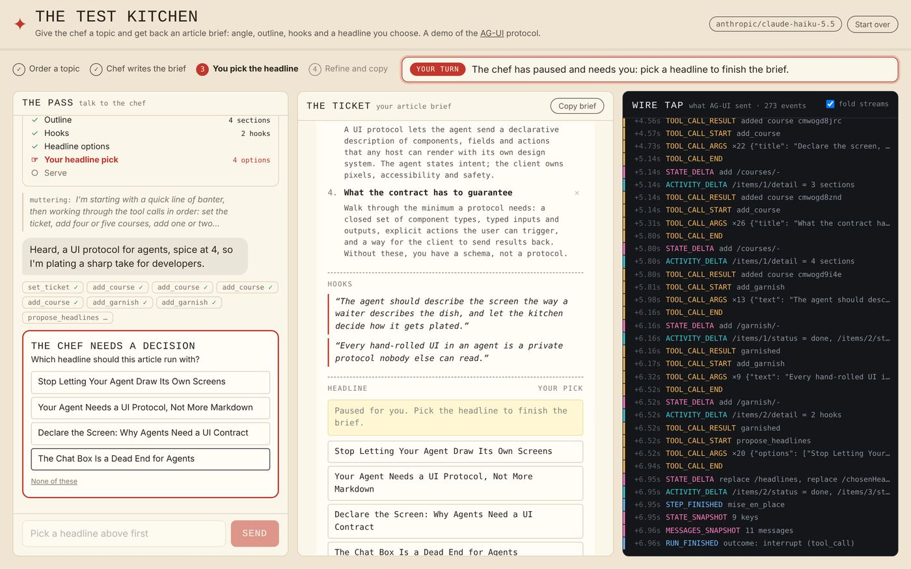
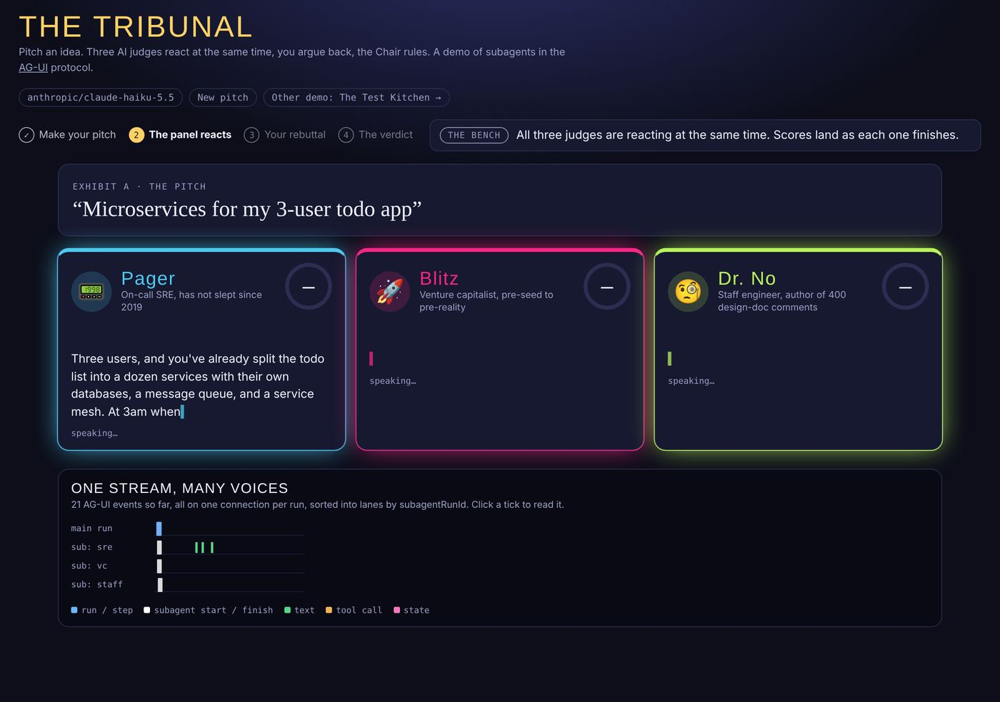

What AG-UI did in the Test Kitchen and the Tribunal
AG-UI is a contract for the conversation between an agent and a user interface. This guide shows where it sat in the two demos, which events did which job, and what the same apps would need if you built them without it.
Event families:run and steptexttool callsshared stateactivitysubagents
Where it sits
AG-UI is two things: the shape of the request the browser sends, and the vocabulary of events the agent streams back. It says nothing about which model you call or how your agent loop works. Both demo servers are hand-written and call the model directly.
Every interaction in both demos is this one round trip, repeated. There is no second endpoint and no socket. That design has costs too, listed under What it cost.
The same app, with and without
Nothing in the demos is impossible without AG-UI. The difference is how many things you have to invent. Here is the Test Kitchen's traffic drawn both ways. The left side is a typical hand-rolled design, not something I built and measured.
Hand-rolled
Five channels, each with a message format, a client parser and a failure mode you design. A paused run has to live in a store on the server until the user answers.
With AG-UI
The same traffic as one request and one stream. A pause is the last event of a run, and the answer rides in the next request, so the server has nothing to remember.
You could fold the five channels into one socket with your own message types. Many teams do. At that point you have written a private version of this protocol, and only your own client can speak it.
The Test Kitchen, piece by piece
A chat with a chef who writes an article brief onto a ticket that both of you can edit. The screenshot is the moment the run is paused, waiting for a headline.

12345
1Whose turn it is. Read from the run's outcome and the client's list of pending interrupts.
2Tool chips. One per TOOL_CALL_START, ticked when its TOOL_CALL_RESULT arrives.
3The decision card. Built from the interrupt's own question and its list of allowed answers.
4The ticket. A rendering of shared state, patched by STATE_DELTA.
5The wire tap. The raw event stream. Because every event is typed, this inspector is about 100 lines.
On screen
With AG-UI
Without it, you design
The ticket fills in live
STATE_SNAPSHOT once, then STATE_DELTA JSON Patches. The client applies them to agent.state.
An update message format, merge code in the browser, and a rule for when to resend everything.
Sections type themselves before they are saved
TOOL_CALL_ARGS streams the half-written arguments. The client hands back repaired partial JSON to preview.
A second stream for drafts, or waiting until each section is complete.
The prep-list checklist
ACTIVITY_SNAPSHOT, then ACTIVITY_DELTA patches to the same message.
A progress endpoint to poll, or your own progress messages.
The pause for a headline
RUN_FINISHED with outcome: interrupt. The answer returns as resume in the next request.
An approval endpoint, a store of paused runs with expiry, and a way to tie an answer to its run.
Bell, confetti, redecorating
The browser lists its tools in the request. The agent calls one with ordinary TOOL_CALL_* events and the browser runs it.
A private command channel, plus a way to tell the model what this UI can do.
Your hand edits reach the chef
The edited ticket rides in the next request as state, and what you changed as context.
A save endpoint and a sync rule between your edits and the agent's.
"Chef suggests" chips
A tool writes suggestions into shared state. No new mechanism.
One more message type.
One brief, three runs
Human input and browser-side tools both work the same way: the run ends, and the next request carries what happened. Any server instance can take run two, because run one left nothing behind.
The Tribunal, piece by piece
No chat. Three judges react to a pitch at the same moment, you get one rebuttal, and a Chair stamps the verdict. This demo exists to show one thing the Kitchen does not: several agents talking over one connection.

123
1Three cards typing at once. Each judge is a separate model call. Their tokens arrive interleaved.
2The glow. On at SUBAGENT_STARTED, off at SUBAGENT_FINISHED.
3The lanes. The same stream, sorted by the id on each event.
The server runs the three calls with one Promise.all and writes each event to the response the moment it has it. The id on every event is all the browser needs to untangle them.
On screen
With AG-UI
Without it, you design
Three judges typing at once
SUBAGENT_STARTED / FINISHED, and a subagentRunId on each judge's text, tool and state events.
Three connections to manage, or your own channel ids and routing on one.
Scores and the average gauge
Each judge calls a score tool, applied as a STATE_DELTA. The gauge is just a reading of state.
A score message type, and client code to keep the totals right.
The rebuttal form
An input_required interrupt. The form is generated from its responseSchema, and the text returns in resume.
A hard-coded form for this question, and another for the next one.
Scores move after you argue
Round one's takes and scores live in shared state and come back with the resume request.
A session on the server holding round one.
The verdict stamp
The Chair calls a browser tool, stamp_verdict.
A private command channel, as in the Kitchen.
What it cost, and what it did not do
2HTTP endpoints for two whole apps
0bytes of session kept on the server
287events for one Kitchen brief, up to the pause
365events for one Tribunal session with a rebuttal
Still our job
The agent loop. Calling the model, running tools and deciding when to stop is about 300 lines per server (agent.ts 309, tribunal.ts 351).
Every pixel. The protocol says a tool was called. Drawing a chip, a ticket or a score ring is ordinary frontend work.
Edits during a run. The Kitchen locks the ticket while the chef works. AG-UI carries state both ways but does not merge simultaneous edits for you.
Persistence. Reload either page and the conversation is gone.
Rough edges we hit
The stream is chatty. Hundreds of small events per run. Fine over SSE, but a raw log needs folding to be readable.
Docs trail the SDK. The JavaScript encoder page was empty, and helpers such as addMessage and pendingInterrupts were found by reading the type definitions.
A type that did not match. Partial tool arguments are typed as an object but arrived as a JSON string in SDK 1.0.5. The first live-draft attempt failed on that.
Rules to learn. A paused run must send a state and a messages snapshot first, and an activity message has to be included in that snapshot or the client drops it.
The price of a stateless server
The server speaks only when asked. Events flow only inside a run, and every run starts with a browser request. With no socket, the agent cannot tell the user that a background job finished, or say anything between turns. Adding that means adding a second channel.
Requests grow. The server keeps nothing, so every request carries the whole conversation and the whole state. In a scripted Kitchen run, the first request was 0.4 KB and the resume request after the pause was 4.3 KB. A long session resends its full history on every turn.
The browser holds the record. The state and messages the server receives are whatever the browser sends. Both servers check their shape and length (normalizeTicket, normalize), but a user can still change a Tribunal score or an earlier message before the next request. An app that has to trust those values must sign them or keep its own copy, and at that point it has a server-side session again.
When it earns its place
Worth it
The agent changes something on screen besides chat text: a document, a board, a form.
A run has to stop for a person and continue later, possibly on another server.
The agent should drive the UI, or more than one agent speaks at once.
You expect to swap the backend. The protocol has adapters for agent frameworks such as LangGraph, so the same UI should work against one. That was not tested here.
Skip it
A plain chat box that only streams text. Raw text chunks over SSE are less to learn and less to send.
A one-shot call with no streaming, no tools and no shared state.
An agent that has to reach the user without being asked, such as when a long job finishes. AG-UI over HTTP only answers requests, so you would need a push channel alongside it.